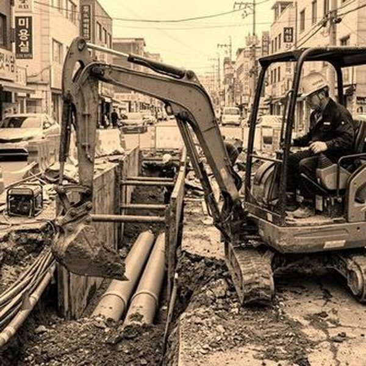
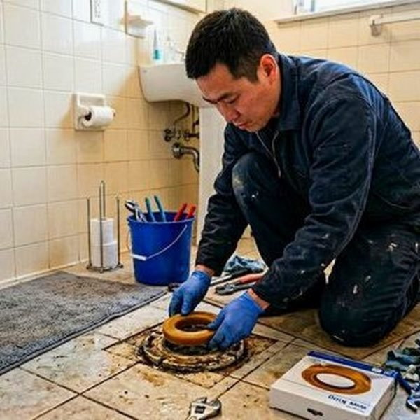
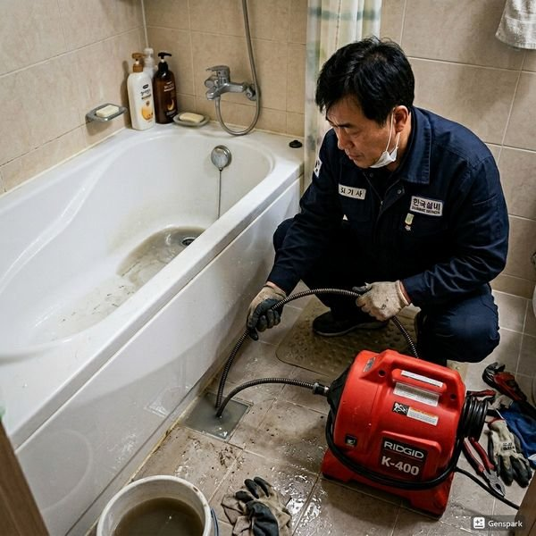

제우스시설관리 | 2025년 4월

욕실의 곰팡이가 자꾸만 생기고 사라지지 않는다면, 단순한 습기 문제만은 아닐 수 있습니다. 배관 누수가 주요 원인일 수 있기 때문입니다.
곰팡이는 습도 80% 이상에서 빠르게 번식합니다. 욕실은 샤워 후 습도가 높아지지만, 일반적으로 환기하면 곰팡이가 생기지 않습니다. 하지만 곰팡이가 계속 반복된다면, 배관 누수로 인한 지속적인 습기 공급이 원인일 수 있습니다.
곰팡이가 특정 부분에만 집중된다면 더욱 의심해야 합니다:
• 욕실 특정 벽면에만 계속 생김
• 천장에서 물이 스며 내려옴
• 벽을 눌렀을 때 물러든 느낌
• 특정 부분에서 곰팡이 냄새가 남
눈에 보이는 신호:
• 욕실 타일 줄에 물자국 또는 색 변화
• 벽 또는 천장에 습한 부분
• 욕실 아래층 천장에서 물이 떨어짐
눈에 보이지 않지만 의심해야 할 신호:
• 욕실만 유독 습기가 많음
• 환기해도 냄새가 사라지지 않음
• 욕실 일부 벽이 따뜻함 (온수관 누수)
자신이 할 수 있는 점검:
1. 욕실에서 모든 수전을 차단한 상태로 수도 사용량 확인
2. 습한 부분의 타일을 드라이버로 가볍게 두드려보기 (속이 축축하면 수로 소리 남)
3. 욕실 물 사용량 증감 확인
전문가 진단이 필요할 때:
배관 내시경 카메라로 욕실 아래 배관을 촬영하여 누수 부분을 정확히 파악합니다. 누수 위치에 따라 부분 수리 또는 전체 배관 교체를 결정합니다.
배관 누수를 수리했다고 해도 이미 습기가 배인 부분은 건조가 필요합니다:
✓ 제습기 사용 (최소 1주일)
✓ 송풍기로 강제 환기
✓ 타일 뒤 습한 부분에 드라이기로 온풍 집중
✓ 곰팡이 제거제 사용
습기가 완전히 제거되지 않으면 곰팡이가 다시 생길 가능성이 높으므로, 철저한 건조가 매우 중요합니다.

